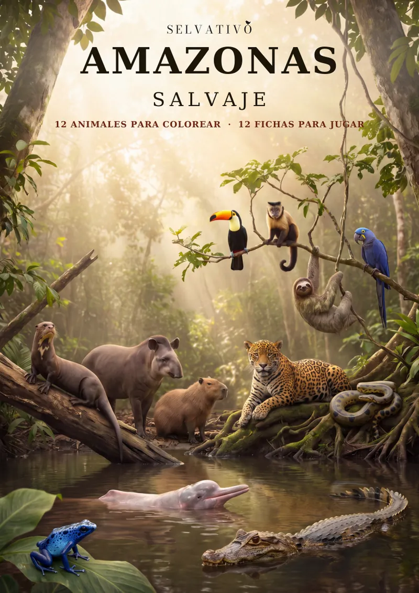
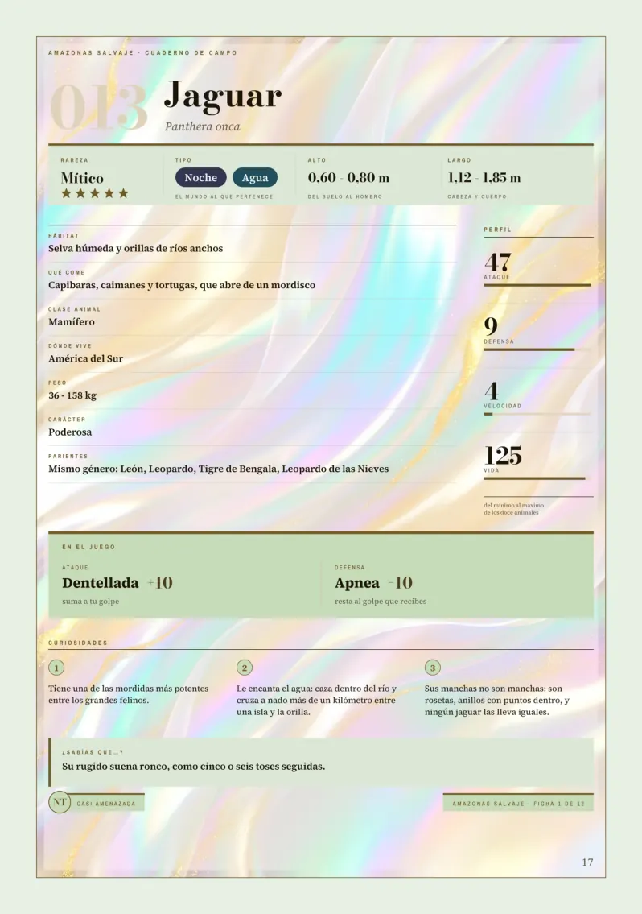
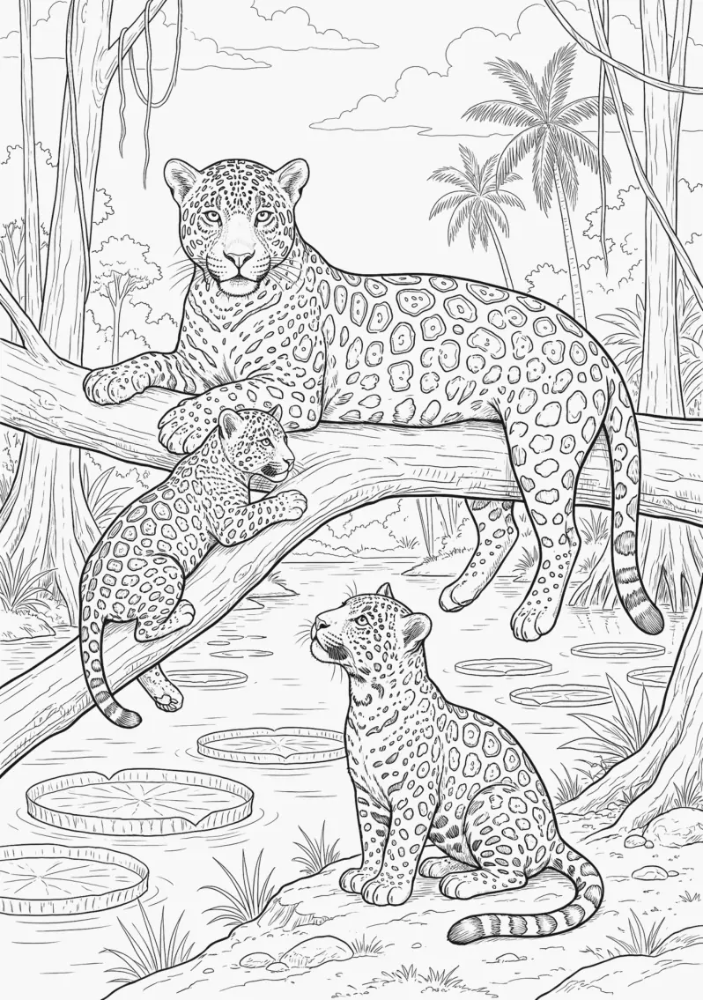

América del Sur, 1 de 3
Amazonas Salvaje
Libro de animales de América del Sur para colorear y jugar, a partir de 6 años. 84 páginas.
Una ficha y una lámina del libro.


El libro, en 30 segundos.
Doce animales. Doce fichas. Un solo campeón.
Un libro para colorear que además es un juego. Cada animal de la selva amazónica tiene su ficha, con todo lo que hay que saber de él; su retrato a página completa, para verlo entero y en su sitio; y justo enfrente, su dibujo esperando tus colores.
Y cuando termines de pintarlo, su ficha entra en el juego: ataque, defensa, velocidad y vida. Elige tu animal, busca un rival y que gane el mejor. Las reglas están al principio, con un ejemplo resuelto, y las partidas se apuntan en el propio libro: nada suelto que se pierda.
LOS DOCE DEL AMAZONAS
Jaguar · Tucán · Mono capuchino · Perezoso · Anaconda · Capibara · Tapir · Caimán · Delfín rosado · Guacamayo azul · Rana flecha azul · Nutria gigante
QUÉ HAY DENTRO
- 12 animales para colorear, cada uno a página completa.
- 12 retratos a toda página, cada uno frente a su dibujo.
- 12 fichas con datos reales: peso, medidas, hábitat, qué come, tres curiosidades, un «¿Sabías que…?» y cuánto peligro corre su especie según la UICN.
- Duelos y una gran batalla con las fichas: uno contra uno, o seis contra seis por equipos. Cuatro páginas de arenas de duelo y cuatro hojas de gran batalla para apuntar las partidas a lápiz, borrar y volver a jugar.
- Mapa de América del Sur a doble página, con cada animal en su sitio y el mismo número que su ficha.
- Laberinto, sopa de letras y crucigrama, con las soluciones al final.
- Récords de la selva: la serpiente más pesada del planeta, el roedor más grande del mundo, el delfín de río más grande… y el más fuerte, que se decide jugando.
- Ponte a prueba: seis preguntas, el intruso y «adivina quién soy», con todas las respuestas en las fichas.
- Cuaderno de exploración: una casilla y una fecha por cada animal terminado.
- Cuidar la selva: qué necesitan estos animales y qué puede hacer un niño o una niña sin salir de su calle.
- Inventa tu animal: una ficha en blanco para crear uno que no existe y enfrentarlo a los doce.
POR QUÉ ESTE Y NO OTRO
Aquí se colorea, se lee, se mira, se escribe y se juega. Y cuando el último dibujo está pintado, el libro sigue sirviendo: las fichas se juegan una y otra vez.
Formato grande A4 (21 × 29,7 cm) · 84 páginas · interior a todo color · a partir de 6 años.
Lo único que hace falta: lápices de colores y un lápiz con goma. Detrás de cada dibujo, la página va en blanco.
Primer libro de América del Sur de la colección «Selvativo». Todas las fichas de la colección hablan el mismo idioma, así que estos doce se pueden enfrentar a los animales de cualquier otro libro. Al final, un adelanto del siguiente: «Cumbres de los Andes».
Amazonas Salvaje